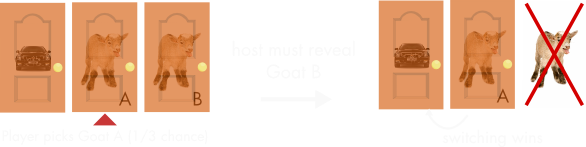
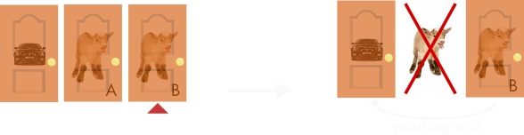

Welcome to the More Doors tutorial!
Step 1 Select a door!
Step 2 Monty will open eight more doors, which will all contain goats!
Step 3 Stay with your first pick, or select the remaining door!
| Switch | Stay | |
|---|---|---|
| Win | 0 | 0 |
| Lose | 0 | 0 |
switching has won __% of the time
staying has won __% of the time
Welcome to the More Doors Text tutorial!
Imagine Let's Make a Deal changed their rules and had 10,000 doors instead of three, with one door containing the car and 9,999 doors had a goat.
The rules work like this: you pick a door, and Monty, knowing which door has the car, opens 9,998 different doors, leaving your first choice and one other door closed. Then he asks if you wish to switch.
Say you pick door number 1. Then Monty proceeds to open all the other doors, skipping door number 7,349. Is it in your favor to switch to door number 7,349 or stick with door number 1?
Bayes Theorem!
Let us assume this:- curtain a is the curtain picked by the contestant.
- curtain b is the curtain opened by Monty Hall.
- curtain c is the third curtain.
- A, B, and C are the events that the prize is behind curtains a, b, and c respectively.
- O is the event that Monty Hall opens curtain b.
Bayes's Theorem:
-
Pr{O|A} = 1/2, if the prize is behind a, Monty Hall can open either b or c
Pr{O|B} = 0, if the prize is behind b, Monty Hall cannot open curtain b
Pr{O|C} = 1, if the prize is behind c, Monty Hall can only open curtain b
Pr{C|O} = (1/3 * 1/1) / (1/2) = 2/3
The Vos Savant Explaination
| behind door 1 | behind door 2 | behind door 3 | result if staying at door #1 | result if switching to the door offered |
|---|---|---|---|---|
| Car | Goat | Goat | Car | Goat |
| Goat | Car | Goat | Goat | Car |
| Goat | Goat | Car | Goat | Car |
The Adams and Devlin Explaination
The Economist Explaination


The Simulations Explaination

The Conditional Probability Tree
